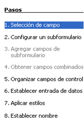
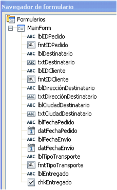

4.2.1. Asistente
|
 |
| Pasos del asistente |
El asistente de creación de formularios nos guía a través de ocho pasos, no todos obligatorios. Algunos de ellos ya son conocidos.
- Selección de campos de una tabla o consulta.
- Configurar un subformulario para mostrar datos de tablas con relaciones uno a varios.
- Si se ha activado el paso 2, se agregan los campos del subformulario.
- Tras el paso 3, se determinan los campos combinados del formulario y subformulario.
- Establecer la disposición de los campos según cuatro diseños preestablecidos.
- Definir las acciones sobre los campos: sólo nuevos registros, permitir modificación, borrado o adición.
- Aplicar los estilos predefinidos: colores de fondo, fuentes y bordes de campos.
- Nombrar el formulario.
Caso práctico
Vamos a utilizar el asistente para crear un formulario básico que muestre la tabla Pedidos.
Comprueba lo aprendido
Solución
Solución
Solución
Para saber más
|
 |
Todos los elementos insertados en un formulario aparecen en el Navegador de formulario, que se activa mediante este icono. Tanto las etiquetas como los cuadros de texto están identificados por nombres genéricos asignados por el asistente. Para modificar el nombre y las propiedades de cualquier elemento basta seleccionarlo y hacer clic en el botón derecho del ratón en propiedades. Por defecto el título del formulario es MainForm. En el siguiente apartado las propiedades de cada elemento serán definidas por el diseñador. |
| Navegador de formulario |